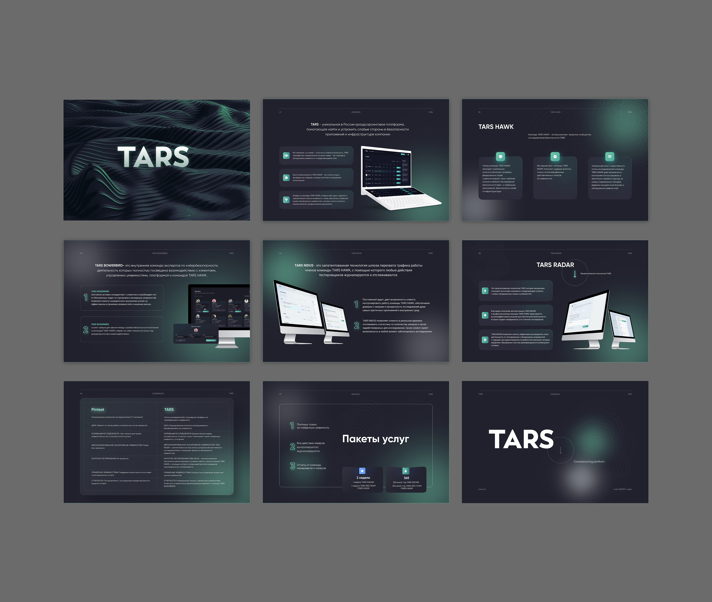

01 / Избранные работы
Презентации для разных задач и проектов
В каждой презентации визуальная система поддерживает содержание и помогает понятно рассказать о проекте — от общественной инициативы и цифрового продукта до запуска недвижимости.
Выберите проект, чтобы открыть его презентационные материалы в полном размере.

02 / Запуск проекта
Презентация к запуску небоскреба на Ходынском поле «STONE SKY Ходынка»
Открыть презентацию
03 / Запуск проекта
Презентация к запуску премиального бизнес-центра «STONE Белорусская 2»
Открыть презентацию
Больше проектов и направлений работы — в портфолио.
Вернуться ко всем проектам